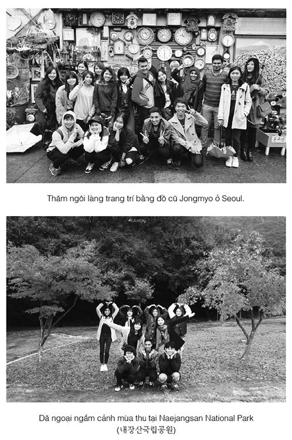

Nhà nghỉ mà lẽ ra Cáo phải gặp Jacob ở đó là nơi họ đã từng ở trước đây. Hồi ấy họ đến Gargantua để tìm một chiếc áo jacket bằng da lừa giúp người mặc có thể giấu mình trước kẻ thù. Nhà nghỉ Le Chat Botté không chỉ nằm bên cạnh thư viện mà Jacob muốn đến thăm, nó còn nằm dưới bóng tượng đài được xây dựng để tưởng niệm người khổng lồ mà thành phố mang tên. Bức tượng chân dung cao gần bằng một tòa tháp nhà thờ của ông mang du khách từ những miền đất xa xôi nhất đến đây, nhưng Cáo không nhìn mái tóc làm bằng bạc của ông ta lấy một lần, hay đôi mắt làm từ thủy tinh xanh được cho là chuyển động vào ban đêm. Cô mong mỏi khuôn mặt của Jacob. Cuộc du ngoạn về quá khứ một lần nữa chỉ cho cô thấy rõ rằng, anh là mái ấm duy nhất mà cô có.
Phòng khách của Le Chat Botté thanh lịch hơn nhiều so với Quán Ăn Thịt Người của lão Chanute. Khăn trải bàn và nến, gương treo trên tường và những cô hầu phòng đeo tạp để ren... Ông chủ nhà nghỉ khoác lác rằng có mối quan hệ thân mật với chú mèo huyền thoại. Đôi hia được treo bên cạnh cửa làm bằng chứng, nhưng nó chỉ vừa vặn với một đứa trẻ, và mọi tay săn kho báu đều biết Chú mèo đi hia cao bằng một người trưởng thành.
Ông chủ nhà nghỉ ném cho bộ quần áo đàn ông của Cáo cái nhìn không đồng tình trước khi tìm tên Jacob trong sổ khách đặt phòng.
“Mademoiselle?” [*] Người đàn ông đứng dậy từ bên bàn điển trai đến nỗi vài người phụ nữ phải ngoái lại nhìn, nhưng Cáo chỉ nhìn cổ áo lông thú màu đen của anh ta.
Anh ta ngừng lại trước mặt cô, sờ tay lên cổ áo. “Một món quà của ông tôi,” anh ta nói. “Cá nhân tôi không lấy gì làm thích thú kiểu đi săn này. Tôi luôn luôn bênh vực loài cáo.”
Tóc anh ta đen như cái bóng trên tường, nhưng mắt có màu gần như xanh nhạt của bầu trời mùa hè. Ngày và đêm.
“Jacob đã nhờ tôi để mắt đến cô. Anh ấy đang ở chỗ bác sĩ - anh ấy vẫn khỏe!” anh ta nói thêm, khi Cáo nhìn anh lo lắng. “Anh ấy vấp phải dây leo siết cổ và một vài con sói. Thật may chúng tôi đi chung một đường.”
Anh cúi mình và hôn lên tay cô. “Guy de Troisclerq. Jacob đã miêu tả cô rất kỹ.”
Phòng mạch bác sĩ ở cách không xa lắm. Troisclerq chỉ đường cho Cáo. Sói và dây leo siết cổ... Nói cho đúng ra Jacob biết cách làm thế nào để giữ bọn sói tránh xa, và dây leo siết cổ được cho là đã bị tiêu diệt sạch ở Lothringen, từ khi luật quy định phải đốt bỏ chúng vì một người cháu gái của Vua Gù bị chúng giết chết. Jacob gặp Cáo giữa đường với bàn tay băng bó và áo sơ mi lốm đốm máu. Cô hiếm khi thấy anh giận dữ đến thế.
“Gã lai lấy cái thủ cấp rồi.” Anh nhăn mặt đau đớn khi cô ôm lấy anh, và không dễ để anh tiết lộ chuyện gì đã xảy ra. Ít nhất bây giờ lòng kiêu hãnh bị tổn thương của anh gạt qua một bên những ý nghĩ về cái chết, nhưng Cáo không thể nghĩ đến điều gì khác hơn. Tất cả những vội vã, hiểm nguy, thời gian mà họ đã tiêu tốn để tìm cái thủ cấp... mất trắng! Một lần nữa họ lại trắng tay. Trong một phút Cáo sợ hãi đến phát nôn, cô siết chặt những ngón tay quanh chiếc hộp trong túi xách.
“Gã cũng đoạt được bàn tay rồi!” Jacob nhìn lên tượng đài. Trong tai của người khổng lồ một bầy chim làm tổ, nhưng Cáo chắc rằng thay vì đá được chạm khắc Jacob chỉ thấy khuôn mặt đá cẩm thạch đen đúa của gã lai.
“Đồ khốn, anh thở hổn hển. “Anh sẽ tìm ra quả tim trước hắn và rồi lấy lại thủ cấp và bàn tay. Hôm nay chúng ta sẽ đi ngựa đến Vena.
“Anh không thể đi xa thế. Troisclerq nói một con sói đã cắn vào bên sườn anh.” Ngay cả một con ngựa tốt cũng phải mất ít nhất mười ngày để đến Vena.
“Vậy sao? Anh ta còn kể gì với em nữa?”
“Anh ấy không kể gì nữa hết!” Ôi, lòng kiêu hãnh của anh. Chắc hẳn anh thà để bầy sói ăn thịt, còn hơn là để một người lạ mặt cứu giúp. “Tại sao chúng ta phải đi Vena? Anh có nghe tin gì từ Chanute hay Dunbar không?”
“Có, nhưng những điều họ biết anh cũng đã biết. Người con gái của Guismund được chôn cất ở Vena, trong hầm mộ của gia đình đế vương. Đó là dấu vết duy nhất mà anh có.” Chẳng nhiều nhặn gì. Và Jacob biết điều đó.
“Tối nay có một chuyến xe ngựa.”
“Đi xe ngựa thì chúng ta cần ít nhất hai tuần! Anh biết xà ích sẽ ngừng ở mỗi nhà nghỉ mà. Gã Goyl chắc hẳn đã lên đường rồi.”
Cả hai người đều biết anh nói đúng. Ngay cả khi họ hối lộ cho tay xà ích, sẽ phải mất hơn mười ngày. Gã lai chắc chắn sẽ đến Vena trước họ. Điều duy nhất họ có thể trông mong là gã không tìm thấy quả tim, dù đã khá nhanh khi tìm thấy bàn tay.
Jacob ôm bên sườn bị đau, và trong một thoáng Cáo đã trông thấy điều gì đó trên khuôn mặt anh, điều mà cô chưa từng thấy trước đây. Anh đang bỏ cuộc. Chỉ trong một khoảnh khắc thoáng qua, nhưng khoảnh khắc ấy làm cổ sợ hãi hơn tất thảy.
“Anh nghỉ ngơi đi,” cô nói rồi vuốt ve khuôn mặt trầy xước của anh. “Em sẽ lo vé xe.”
Jacob chỉ gật đầu. “Mẹ em khỏe không?” anh hỏi khi cô quay lưng đi.
“Khỏe,” Cáo trả lời, siết chặt bàn tay quanh chiếc hộp trong túi xách. Cô lo lắng cho anh đến thắt cả ruột gan.